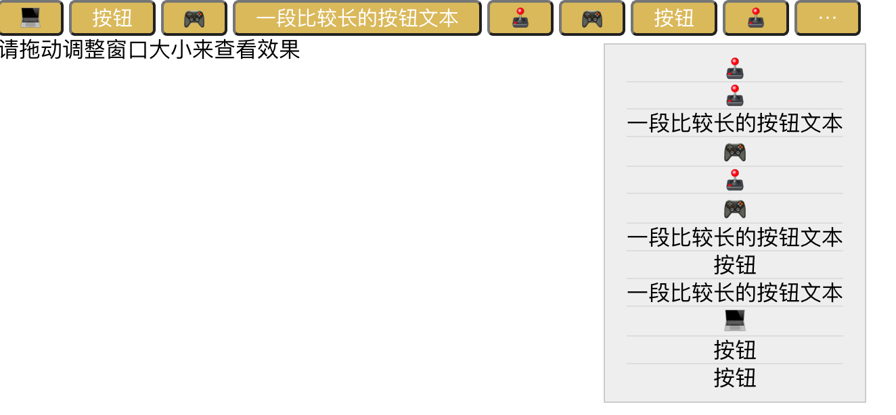
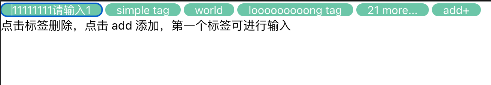

useOverflow
使用场景
当使用横向控件组，容器宽度未知，又不希望控件超出容器范围或换行时，可以使用 useOverflow 来让控件自动调整宽度。
常见使用场景如：
- 标签组自动缩略
- 按钮组宽度不够缩略为更多
 
安装
npm install @zreact/use-overflow
使用
// count 为当前使用的测量数量
// measuredCount 为经过测量后最终得到的合适的数
const [count, measuredCount] = useOverflow({
containerRef: containerRef, // 外层容器的 ref
total: tags.length // 项目的总数
});
API
DEMO
简单场景
内容可变场景
内容可编辑场景
按钮组